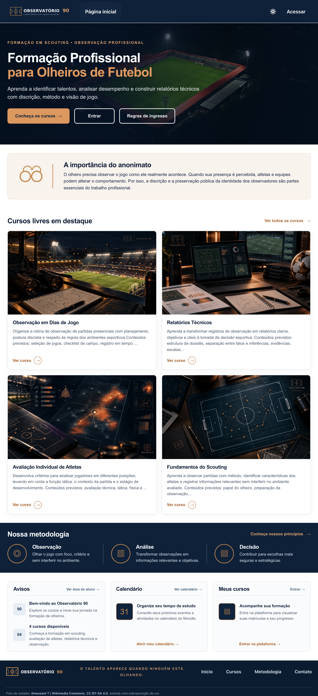

Custom home page
Home page options including custom HTML, institutional sections, and course listings.
LearnLingo is a Moodle theme developed to transform the platform's appearance: home page, colors, logo, login, dashboard, courses, and footer, without replacing Moodle's native educational activities and features.
LearnLingo lets you build institutional home pages with custom HTML and styles. The result can look entirely different from one project to another, while Moodle still handles courses, activities, enrolments, and learning.


Home page options including custom HTML, institutional sections, and course listings.
Colors, logo, favicon, and visual settings to keep pages consistent.
Customize the login page and student dashboard, including widgets and progress settings.
Course listings, featured content, and responsive navigation.
Institutional blocks, contact information, custom HTML, and styles suited to the project.
Guided setup wizard and JSON configuration export/import to reproduce approved designs.
Want to see Moodle designs for different fields? Our gallery showcases real projects with their own visual identities.
Describe the problem, who will use the feature, and the expected outcome. We can develop a custom plugin, adapt an existing one, or integrate Moodle with a system your institution already uses.
Tell me about your platform and what you need. A quote starts with understanding how you operate.
Request a quote